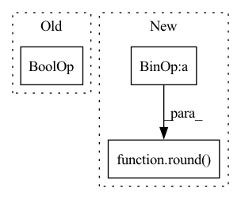

Pattern ID :14827
Before Change
pbar.set_postfix(ShellLoss = "{:.3f}".format(val_loss.item()),
KernelLoss = "{:.3f}".format(loss.item()))
if val_loss.item() > 1 or loss.item() > 1 or val_loss.item() < 0 or loss.item() < 0 :
pdb.set_trace()
returnAfter Change
// postfix for progress bar
postfix = OrderedDict()
postfix["Loss(optim_shell)"] = round( sum_val_loss/ (step+1), 3)
postfix["Loss(optim_kernel)"] = round(sum_loss/(step+1), 3)
pbar.set_postfix(postfix)
return round(sum_val_loss/n_steps, 3), round(sum_loss/n_steps, 3)In pattern: SUPERPATTERN
Frequency: 3
Non-data size: 3
Instances Fragment ID: 49345952
Project Name: woodywff/nas_3d_unet
Commit Name: 483c269d68b745c65d71e2a8566c35bd92e0b584
Time: 2020-03-23
Author: woodywff@aliyun.com
File Name: search.py
M Class Name: Searching
N Class Name: Searching
M Method Name: train(1)
N Method Name: train(1)
M Parent Class:
N Parent Class:
M File Name: search.py
N File Name: search.py
M Start Line: 139
M End Line: 176
N Start Line: 138
N End Line: 180
Before Change
self.im = im if isinstance(im, Image.Image) else Image.fromarray(im)
self.draw = ImageDraw.Draw(self.im)
s = sum(self.im.size) / 2 // mean shape
f = font_size or max(round(s * 0.035), 12)
font = Path(font) // font handling
font = font if font.exists() else (ROOT / font.name)
try:
self.font = ImageFont.truetype(str(font) if font.exists() else font.name, size=f)After Change
self.fh = self.font.getsize("a")[1] - 3 // font height
else: // use cv2
self.im = im
self.lw = line_width or max(round( sum(im.shape) / 2 * 0.003) , 2) // line width
def box_label(self, box, label="", color=(128, 128, 128), txt_color=(255, 255, 255)):
// Add one xyxy box to image with label Fragment ID: 49345958
Project Name: ultralytics/yolov5
Commit Name: de534e922120b2da876e8214b976af1f82019e28
Time: 2021-08-31
Author: glenn.jocher@ultralytics.com
File Name: utils/plots.py
M Class Name: Annotator
N Class Name: Annotator
M Method Name: __init__(6)
N Method Name: __init__(6)
M Parent Class:
N Parent Class:
M File Name: utils/plots.py
N File Name: utils/plots.py
M Start Line: 59
M End Line: 74
N Start Line: 74
N End Line: 78
Before Change
loss, module, optimizer, epoch, steps_per_epoch, **kwargs
)
if not self._distillation_enabled or self._disable_distillation :
return loss
if student_outputs is None or teacher_inputs is None:After Change
)
_log_losses(
self.loggers,
round( epoch * steps_per_epoch) ,
loss,
teacher_loss,
distillation_loss, Fragment ID: 49345966
Project Name: neuralmagic/sparseml
Commit Name: 00add9fd9b677d966f02dd7c32060e50140dc14f
Time: 2022-02-01
Author: mark@neuralmagic.com
File Name: src/sparseml/pytorch/optim/modifier_distillation.py
M Class Name: DistillationModifier
N Class Name: DistillationModifier
M Method Name: loss_update(8)
N Method Name: loss_update(8)
M Parent Class: ScheduledUpdateModifier
N Parent Class: ScheduledModifier
M File Name: src/sparseml/pytorch/optim/modifier_distillation.py
N File Name: src/sparseml/pytorch/optim/modifier_distillation.py
M Start Line: 244
M End Line: 290
N Start Line: 260
N End Line: 327